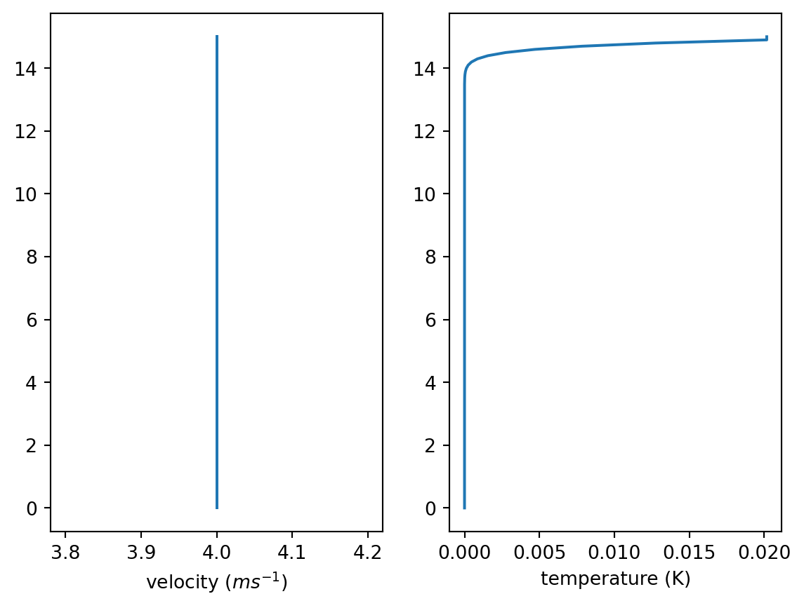

import numpy as np
import parameters as p3 Modelo 1: Etapa 1
Al estar recorriendo el modelo por submodelos, supondremos la velocidad constante. \[ \omega\left(z,t\right)=1,\forall\left(z,t\right)\in\mathbb{R}^{2} \]
Entonces, el sistema queda como sigue \[\begin{align*} \omega\left(z,t\right) & =1\\ \partial_{t}\left(\theta\right)+\partial_{z}\left(\omega\theta\right) & =0\\ \partial_{t}\left(q_{v}\right)+\partial_{z}\left(\omega q_{v}\right) & =0\\ \partial_{t}\left(q_{r}\right)+\partial_{z}\left(\omega q_{r}\right) & =0\\ \partial_{t}\left(q_{N}\right)+\partial_{z}\left(\omega q_{N}\right) & =0 \end{align*}\]
Entonces, pretendemos resolver un sistema desacoplado donde cada variable representa un problema de transporte.
Para ello. partimos importando las librerías básicas y los parámetros definidos para el modelo.
Entonces, proseguimos con la “entrada” del modelo.
z_0 = 0 # Km, nunca olvide las unidades...
z_0 = z_0 / p.length_scale
z_f = 15
z_f = z_f / p.length_scale
print(z_0, z_f)0.0 1.5Una vez definida \(Z = [z_0,z_f]\), seguimos con \(n_z\), en nuestro caso, comenzaremos con \(n_z = 150\).
n_z = 150
height = np.linspace(z_0,z_f,n_z)
delta_z = height[1] - height[0]
print(n_z, delta_z)150 0.010067114093959731En nuestro caso, al usar la función “linspace”, dados por sentado que \(\Delta z\) es constante, es decir, \(\Delta z_k=c,c\in\mathbb{R}\).
Ahora, seguimos con el area de trabajo.
variables = ['omega','theta','qv','qr','qn']
workspace = np.zeros((n_z,len(variables)))En nuestro caso, nuestra areá de trabajo es una matriz de \(n_z\times n_v\) donde \(n_v\) es el número de variables. Seguido con las condiciones iniciales, para ello, de nuevo llamamos a las librerías adecuadas.
import matplotlib.pyplot as plt
import init_functions as initPara el primer modelo. Usaremos funciones escalonadas o de Heaviside.
\[ U(x) = \begin{cases} 0& x<0\\ 1& x\geq 0 \end{cases} \]
y = np.array([init.heaviside(i) for i in height])
plt.plot(y * p.velocity_scale, p.length_scale * height)
plt.ylim([0.0,15.0])
plt.xlabel('temperature')
plt.ylabel('height')Text(0, 0.5, 'height')En este caso era claro que saldría constante, por esto vamos a trasladar la función una distancia de \(a\), además sirve para comentar que al estar tratando con alturas, es más conveniente gráficar con el formato anterior. \((f(z),z)\).
# Vamos a desplazar la grafica 3 unidades.
a_omega = 3
a_omega = a_omega / p.velocity_scale
a_theta = 3
a_theta = a_theta / p.temperature_scale
a_qv = 300
a_qv = a_qv / p.ratio_scale
a_qr = 300
a_qr = a_qr / p.ratio_scale
a_qn = 300
a_qn = a_qn / p.ratio_scale
print(a_omega, a_theta, a_qv, a_qr, a_qn)0.27 1.0 0.3 0.3 0.3Recordando que \[ U_a(x) = \begin{cases} 0& x<a\\ 1& x\geq a \end{cases} = U(x-a),\forall a\in \mathbb{R} \]
podemos graficar \(\omega\).
y_omega = np.array([init.heaviside(i - a_theta) for i in height])
plt.plot(y_omega * p.temperature_scale, p.length_scale * height)
plt.ylim([0.0,15.0])
plt.xlabel('temperature')
plt.ylabel('height')Text(0, 0.5, 'height')Entonces, ahora podemos graficar todas en conjunto. Para eso usaremos una función auxiliar
def system_plots(workspace, y):
velocity = workspace[:, 0]
temperature = workspace[:, 1]
vapor = workspace[:, 2]
water = workspace[:, 3]
core = workspace[:, 4]
wt_plots, ax = plt.subplots(1, 2)
qvrn_plots, axq = plt.subplots(2, 2)
ax[0].plot(velocity * p.velocity_scale, y * p.length_scale)
ax[0].set_xlabel('velocity ('r'$ms^{-1}$'')')
ax[1].plot(temperature * p.temperature_scale, y * p.length_scale)
ax[1].set_xlabel('temperature (K)')
axq[0, 0].plot(velocity * p.velocity_scale, y * p.length_scale)
axq[0, 0].set_xlabel('velocity ('r'$ms^{-1}$'')')
axq[0, 1].plot(vapor * p.ratio_scale, y * p.length_scale)
axq[0, 1].set_xlabel('vapor ('r'$g(kg)^{-1}$'')')
axq[1, 0].plot(water * p.ratio_scale, y * p.length_scale)
axq[1, 0].set_xlabel('liquid ('r'$g(kg)^{-1}$'')')
axq[1, 1].plot(core * p.ratio_scale, y * p.length_scale)
axq[1, 1].set_xlabel('cores ('r'$g(kg)^{-1}$'')')
plt.show()Entonces, graficamos las condiciones iniciales.
v0 = 4 # Etapa 1: Velocidad Constante
v0 = v0 / p.velocity_scale
workspace[:, 0] = v0
workspace[:, 1] = [init.heaviside(i - a_theta) for i in height]
workspace[:, 2] = [init.heaviside(i - a_qv) for i in height]
workspace[:, 3] = [init.heaviside(i - a_qr) for i in height]
workspace[:, 4] = [init.heaviside(i - a_qn) for i in height]
system_plots(workspace, height)Una vez podemos ver las condiciones iniciales, procedemos a la implementación del método. Primero definimos \(T=[0,t]\) y fijamos el criterio CFL.
t = 5
cfl = 0.9
delta_t = cfl * delta_z
print(delta_t)0.009060402684563758Una vez definido CFL, podemos calcular \(\Delta_t\) mediante la formula
\[ \Delta t = \dfrac{\text{CFL}}{\Delta z} \]
Para \(\Delta_t\) inicial, pero como se mencionó anteriormente, \(\Delta t\) ira variando mediante la siguiente fórmula.
\[ \Delta t (c_w)= \dfrac{\text{CFL}}{\Delta z} c_w \]
Donde \(c_w\) variará según el modelo. Aplicando el método de upwind, resolvemos el primer modelo.
def upwind_model(dt, dz, u, ve):
m, n = np.shape(u)
aux = np.zeros((m, n))
v = u[:, 0]
t = u[:, 1]
qv = u[:, 2]
qr = u[:, 3]
qn = u[:, 4]
dzt = dt / dz
for i in range(1, m - 1):
if v0 < 0:
aux[i, 0] = ve
aux[i, 1] = t[i] - ve * dzt * (t[i + 1] - t[i])
aux[i, 2] = qv[i] - ve * dzt * (qv[i + 1] - qv[i])
aux[i, 3] = qr[i] - ve * dzt * (qr[i + 1] - qr[i])
aux[i, 4] = qn[i] - ve * dzt * (qn[i + 1] - qn[i])
else:
aux[i, 0] = ve
aux[i, 1] = t[i] - ve * dzt * (t[i] - t[i - 1])
aux[i, 2] = qv[i] - ve * dzt * (qv[i] - qv[i - 1])
aux[i, 3] = qr[i] - ve * dzt * (qr[i] - qr[i - 1])
aux[i, 4] = qn[i] - ve * dzt * (qn[i] - qn[i - 1])
aux[0, :] = aux[1, :]
aux[-1,:] = aux[-2, :]
return auxUna vez construido el modelo. Preparamos la implementación
t_star = 0
while t_star < t:
workspace = upwind_model(delta_t, delta_z, workspace, v0)
dt = cfl * delta_z / np.abs(v0)
t_star += dt
system_plots(workspace, height)
Finalmente, una función que implemente todo lo visto.
def model1(variables, a, v0, Z, n_z, t, cfl):
def heaviside(x): # Tarea, modificar model1 para que acepte diferentes
if x < 0: # funciones
y = 0
else:
y = 1
return y
height = np.linspace(Z[0],Z[1],n_z)
delta_z = height[1] - height[0]
workspace = np.zeros((n_z,len(variables)))
a_omega = a[0]
a_theta = a[1]
a_qv = a[2]
a_qr = a[3]
a_qn = a[4]
workspace[:, 0] = v0
workspace[:, 1] = [init.heaviside(i - a_theta) for i in height]
workspace[:, 2] = [init.heaviside(i - a_qv) for i in height]
workspace[:, 3] = [init.heaviside(i - a_qr) for i in height]
workspace[:, 4] = [init.heaviside(i - a_qn) for i in height]
de_t = cfl * delta_z
t_star = 0
m, n = np.shape(workspace)
while t_star < t:
v = workspace[:, 0]
temp = workspace[:, 1]
qv = workspace[:, 2]
qr = workspace[:, 3]
qn = workspace[:, 4]
aux = np.zeros((m, n))
dzt = de_t / delta_z
for i in range(1, m - 1):
if v0 < 0:
aux[i, 0] = v0
aux[i, 1] = temp[i] - v0 * dzt * (temp[i + 1] - temp[i])
aux[i, 2] = qv[i] - v0 * dzt * (qv[i + 1] - qv[i])
aux[i, 3] = qr[i] - v0 * dzt * (qr[i + 1] - qr[i])
aux[i, 4] = qn[i] - v0 * dzt * (qn[i + 1] - qn[i])
else:
aux[i, 0] = v0
aux[i, 1] = temp[i] - v0 * dzt * (temp[i] - temp[i - 1])
aux[i, 2] = qv[i] - v0 * dzt * (qv[i] - qv[i - 1])
aux[i, 3] = qr[i] - v0 * dzt * (qr[i] - qr[i - 1])
aux[i, 4] = qn[i] - v0 * dzt * (qn[i] - qn[i - 1])
aux[0, :] = aux[1, :]
aux[-1,:] = aux[-2, :]
workspace = aux
dt = cfl * delta_z / np.abs(v0)
t_star += dt
return workspaces = model1(['omega','temp','qv','qr','qn'],
[3,3,3,3,3], 1, [0, 15], 150, 2, 0.9)
system_plots(s, height)4 Modelo 1: Etapa 2
Una vez concluido la etapa 1, seguiremos agregando las funcionces \(V_{\text{T}}, V_{\text{TN}}\). Las cuales tienen la siguiente forma.
\[\begin{align*} V_{\text{T}}\left(q_{r}\right)= & V_{0}\dfrac{q_{r}}{q_{*}}\\ V_{\text{TN}}\left(q_{r}\right)= & V_{\text{TN}d}+\max\left(\dfrac{q_{r}}{q_{*}},1\right)\max\left(V_{T}\left(q_{r}\right)-V_{\text{TN}d},0\right) \end{align*}\]